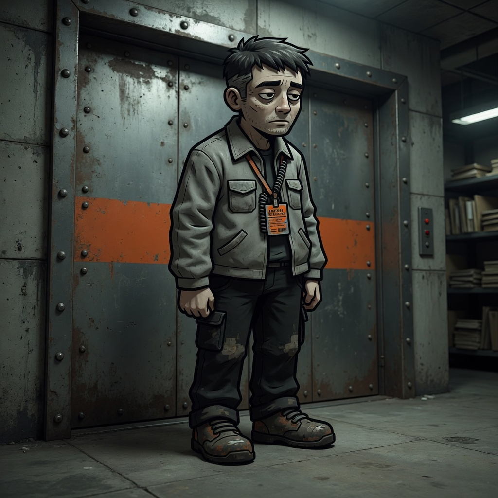
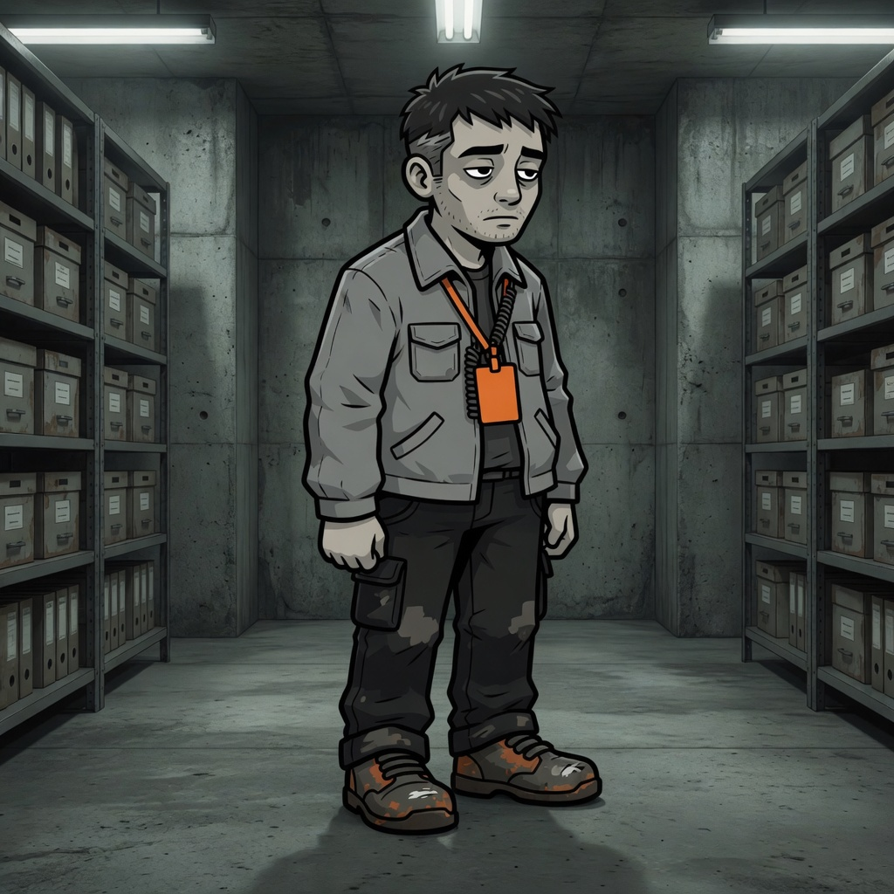
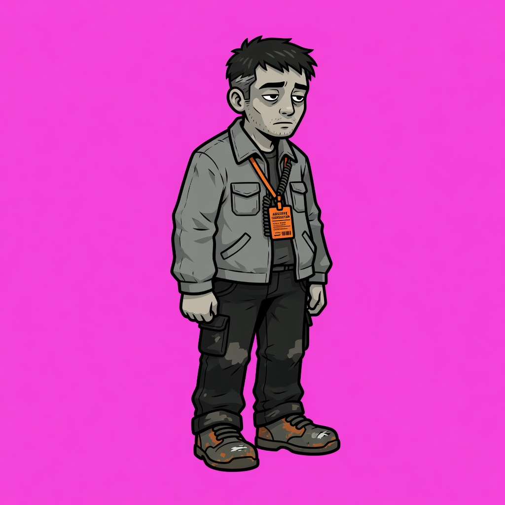
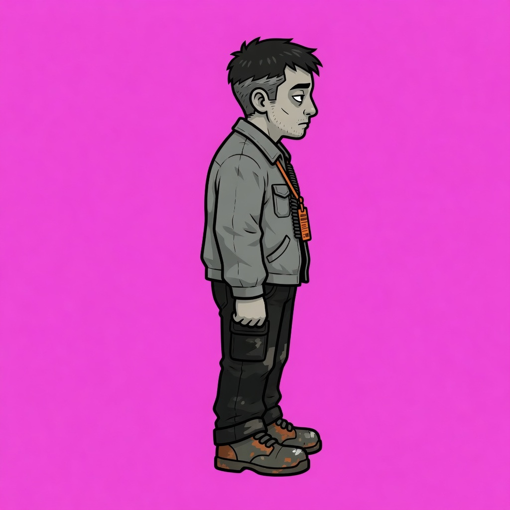
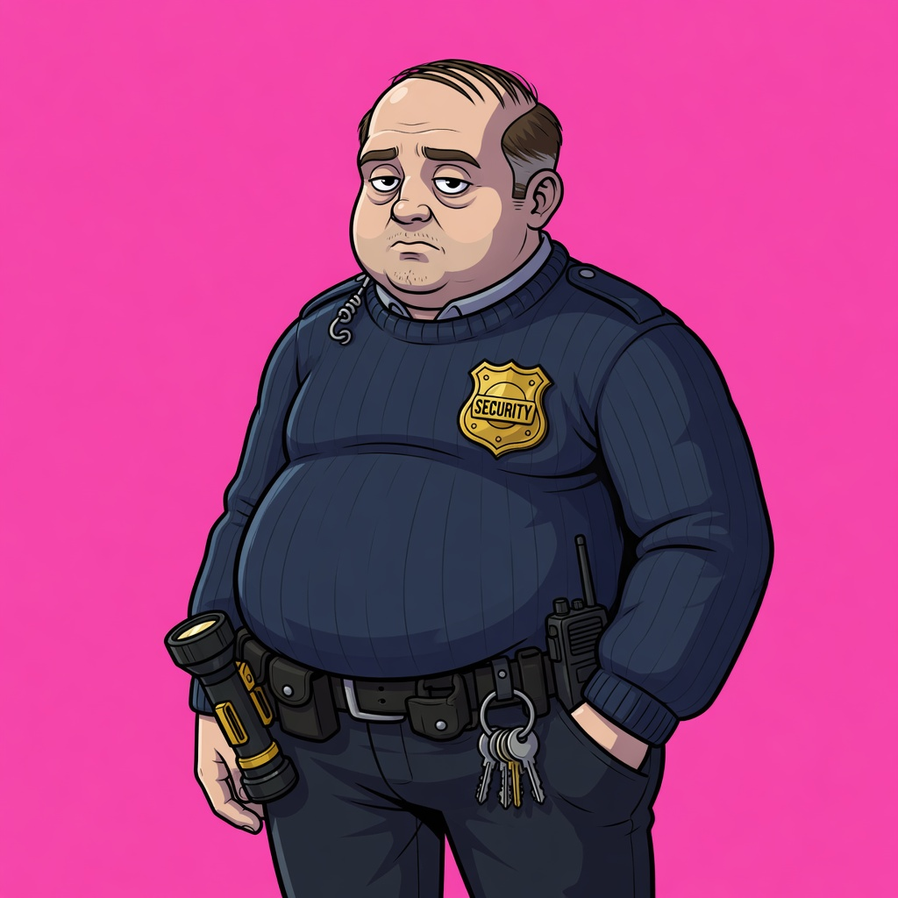
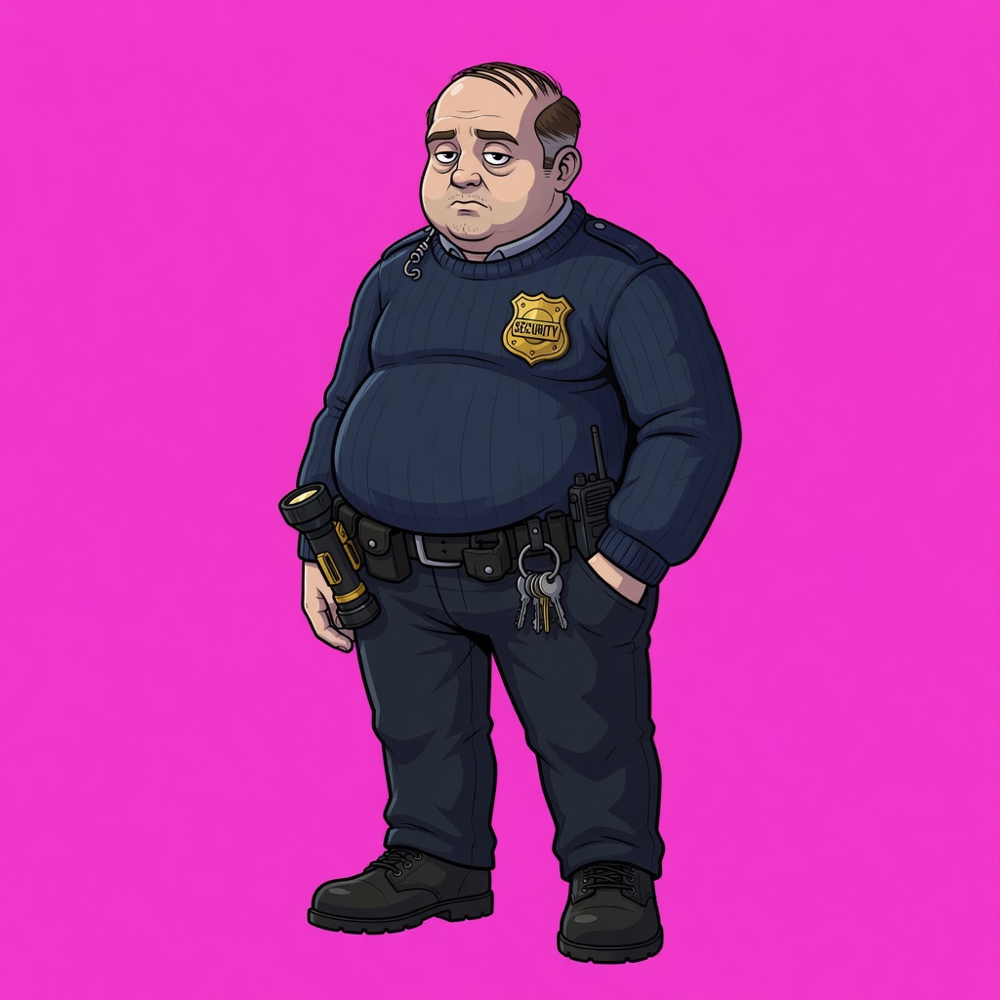
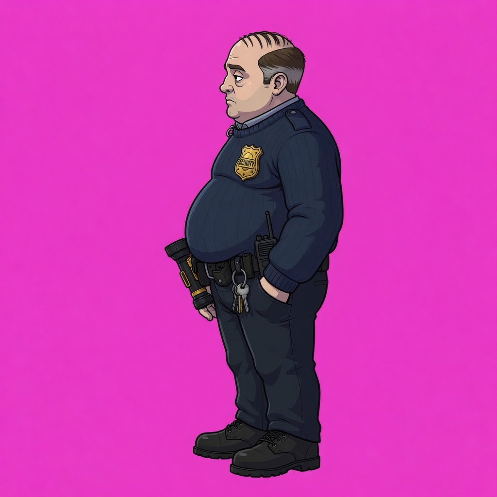
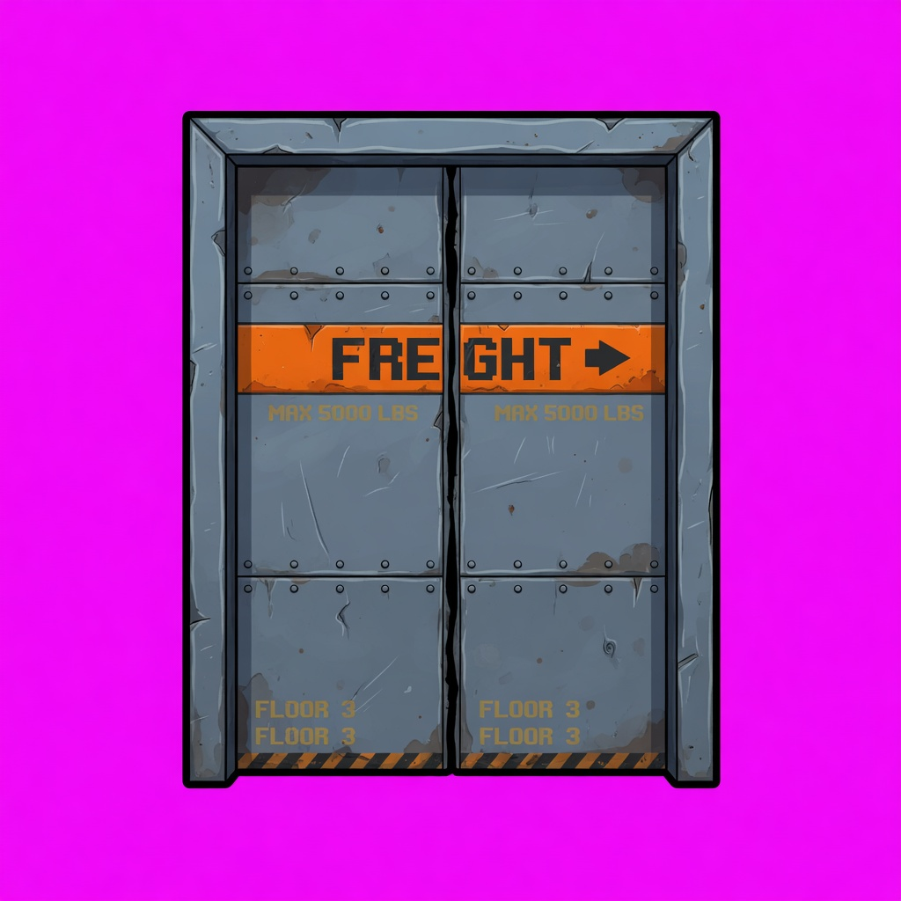
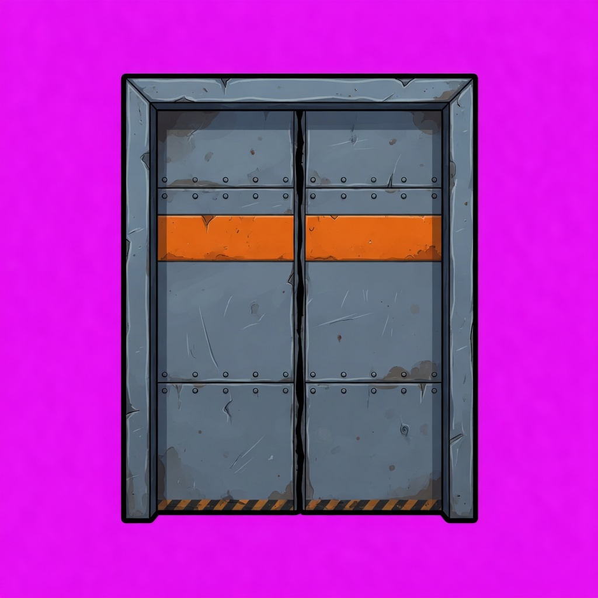
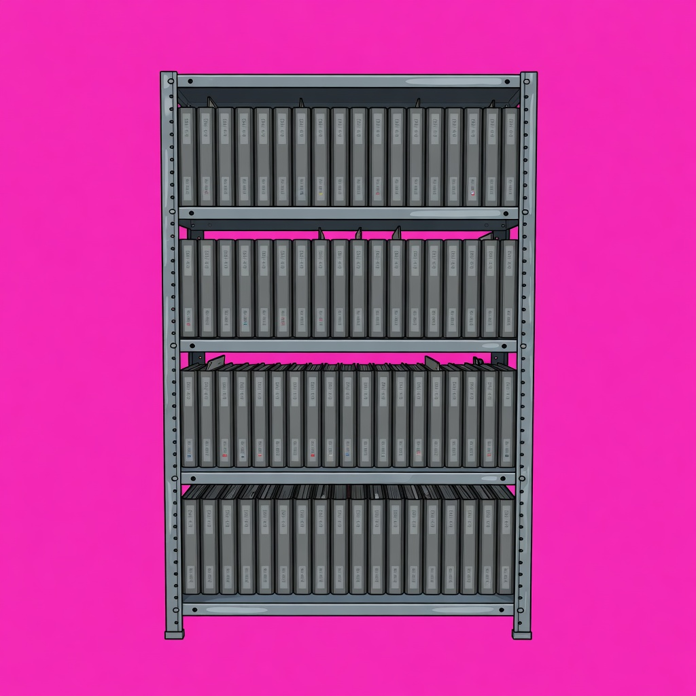

Closed Stack
Night-shift contractor. Brutalist archive. One guard. One freight elevator.
Play the slice
A contractor is booked for a night sort in the closed stacks. The badge is real. The shift is not. Walk the aisles, put the guard down, ride the freight car out.

FILE 07-A
Moth-grey jacket, oxide lanyard, rusted boots. Front and side from the same lock. Never a fresh face.


FILE 07-B
Separate canonical lock. Sweater badge, flashlight, keys. Not a recolor of the contractor.





